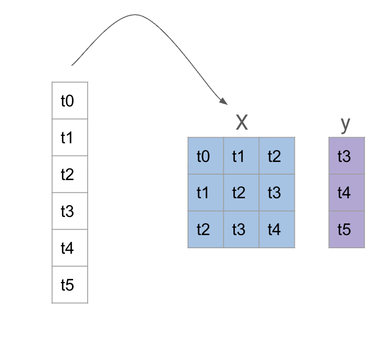
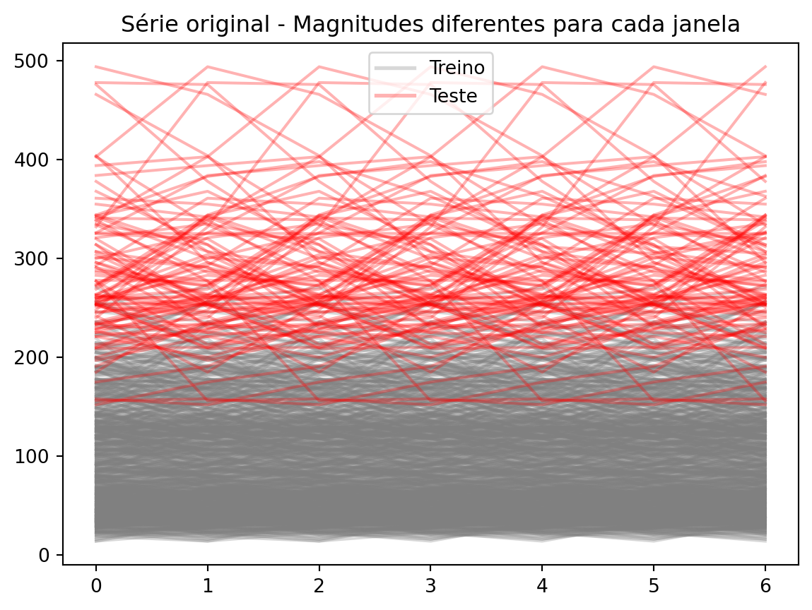
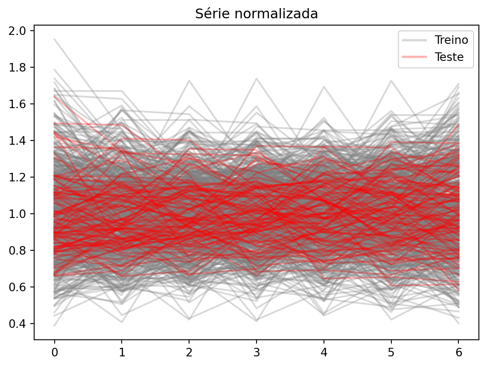
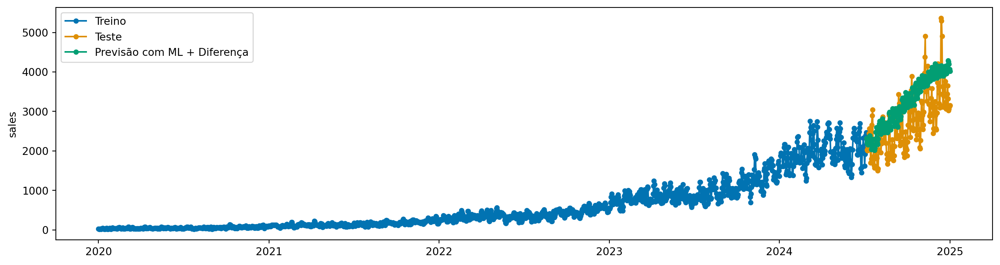
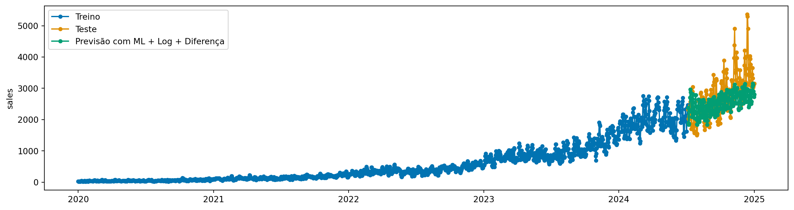

Nesse capítulo vamos ver as maneiras de usar modelos de Machine Learning para forecasting. Aqui é onde mais acontecem erros de novos praticantes, pois muitas vezes tentam aplicar modelos de ML diretamente na série temporal.
Para usar um modelo de ML, precisamos transformar a série temporal em um problema de regressão tradicional. Isso é feito criando janelas deslizantes (sliding windows) da série temporal, onde cada janela é usada como uma amostra de treinamento para o modelo de ML.
Ou seja, se temos uma série temporal \((y_t)\), podemos criar janelas de tamanho \(n\) e usar os valores \(y_{t-n}, y_{t-n+1}, \ldots, y_{t-1}\) como características (features) para prever o valor \(y_t\).

img/reduction.png
Para prever mais de um passo à frente, existem duas abordagens:
Previsão recursive: se queremos prever \(h\) passos à frente, podemos usar o modelo para prever \(y_{t+1}\), depois usar essa previsão para prever \(y_{t+2}\), e assim por diante, até \(y_{t+h}\). Isso pode levar a erros acumulados, pois cada previsão depende das previsões anteriores.
Previsão direta: em vez de prever um passo de cada vez, podemos treinar o modelo para prever todos os \(h\) passos à frente de uma vez. Isso pode ser feito usando um modelo para cada \(h\) ou usando um modelo que prevê um vetor de \(h\) valores.
A verdade é que as duas abordagens podem ser vistas como uma: a previsão recursiva pode ser vista como uma previsão direta para \(h=1\).
A tendência em séries temporais é como um constante problema de data drift:
Code
_X = [y_train.iloc[i : i +7] for i inrange(0, 700)]_X_test = [y_train.iloc[i : i +7] for i inrange(700, 800)]def set_index(x): x.index =range(len(x))return x_X = [set_index(x) for x in _X]_X_test = [set_index(x) for x in _X_test]import matplotlib.pyplot as pltfig, ax = plt.subplots()for x in _X: ax.plot(x, color="gray", alpha=0.3)for x in _X_test: ax.plot(x, color="red", alpha=0.3)# Add legend, with 1 red line for test and 1 gray for trainfrom matplotlib.lines import Line2Dlegend_handles = [ Line2D([0], [0], color="gray", alpha=0.3, lw=2, label="Treino"), Line2D([0], [0], color="red", alpha=0.3, lw=2, label="Teste"),]ax.legend(handles=legend_handles, loc="best")ax.set_title("Série original - Magnitudes diferentes para cada janela")fig.show()

Quando criamos nossas janelas e olhamos treine e teste, esse problema fica claro. A informação de uma série em treino não é util para prever a série de teste, pois elas estão em magnitudes diferentes.
Uma possível solução para isso é normalizar cada janela, dividindo pelo valor médio da janela. Assim, todas as janelas ficam na mesma escala:
Code
_X = [x / x.mean() for x in _X]_X_test = [x / x.mean() for x in _X_test]fig, ax = plt.subplots()for x in _X: ax.plot(x, color="gray", alpha=0.3)for x in _X_test: ax.plot(x, color="red", alpha=0.3)ax.legend(handles=legend_handles, loc="best")ax.set_title("Série normalizada")fig.show()

e podemos prever sem problemas.
Outra possibilidade é a diferenciação, como já vimos em capítulos anteriores. A diferenciação remove a tendência da série, tornando-a estacionária.
7.2 Usando modelos de ML com sktime
Primeiro, vamos import ReductionForecaster, que é a classe que implementa a abordagem de janelas deslizantes para usar modelos de ML em séries temporais. Vamos testar um primeiro caso sem nenhum tipo de preprocessamento, apenas criando as janelas:
[LightGBM] [Info] Auto-choosing col-wise multi-threading, the overhead of testing was 0.000266 seconds.
You can set `force_col_wise=true` to remove the overhead.
[LightGBM] [Info] Total Bins 7652
[LightGBM] [Info] Number of data points in the train set: 1618, number of used features: 31
[LightGBM] [Info] Start training from score 580.323857
[LightGBM] [Info] Auto-choosing col-wise multi-threading, the overhead of testing was 0.000252 seconds.
You can set `force_col_wise=true` to remove the overhead.
[LightGBM] [Info] Total Bins 7638
[LightGBM] [Info] Number of data points in the train set: 1618, number of used features: 31
[LightGBM] [Info] Start training from score 1.496292
y_pred_diff = model.predict(fh=y_test.index, X=X_test)plot_series( y_train, y_test, y_pred_diff, labels=["Treino", "Teste", "Previsão com ML + Diferença"])plt.show()

Aqui, já vemos uma melhora significativa. Mas tem algo que podemos melhorar para realizar a diferenciação? Sim. Lembre que essa série tem um padrão multiplicativo. Então, antes de aplicar a diferenciação, podemos aplicar uma transformação logarítmica para estabilizar a variância:
from sktime.transformations.series.boxcox import LogTransformermodel_log = LogTransformer() * modelmodel_log.fit(y_train, X=X_train)y_pred_log_diff = model_log.predict(fh=y_test.index, X=X_test)plot_series( y_train, y_test, y_pred_log_diff, labels=["Treino", "Teste", "Previsão com ML + Log + Diferença"],)
[LightGBM] [Info] Auto-choosing col-wise multi-threading, the overhead of testing was 0.000217 seconds.
You can set `force_col_wise=true` to remove the overhead.
[LightGBM] [Info] Total Bins 7652
[LightGBM] [Info] Number of data points in the train set: 1618, number of used features: 31
[LightGBM] [Info] Start training from score 0.002516

7.2.2 Solução 2: Normalização por janela
A diferenciação aumenta o ruído da série, o que pode dificultar o trabalho do modelo de ML. Outra opção é normalizar em cada janela. A classe ReductionForecaster tem um parâmetro chamado normalization_strategy, que pode ser usado para determinar a estratégia de normalização. Vamos usar a estratégia divide_mean, que divide cada janela pelo seu valor médio.
model = ReductionForecaster( regressor, window_length=30, steps_ahead=1, normalization_strategy="divide_mean",)model.fit(y_train, X=X_train)y_pred_norm = model.predict(fh=y_test.index, X=X_test)plot_series( y_train, y_test, y_pred_norm, labels=["Treino", "Teste", "Previsão com ML + Normalização"])
[LightGBM] [Info] Auto-choosing col-wise multi-threading, the overhead of testing was 0.000261 seconds.
You can set `force_col_wise=true` to remove the overhead.
[LightGBM] [Info] Total Bins 7652
[LightGBM] [Info] Number of data points in the train set: 1618, number of used features: 31
[LightGBM] [Info] Start training from score 1.043527
7.2.3 Modelo direto e recursivo
Podemos fazer um conjunto de modelos, um para cada passo à frente. Abaixo, definimos steps_ahead=12, o que significa que o modelo vai prever 12 passos à frente diretamente.
[LightGBM] [Info] Auto-choosing col-wise multi-threading, the overhead of testing was 0.000226 seconds.
You can set `force_col_wise=true` to remove the overhead.
[LightGBM] [Info] Total Bins 7652
[LightGBM] [Info] Number of data points in the train set: 1618, number of used features: 31
[LightGBM] [Info] Start training from score 1.043527
[LightGBM] [Info] Auto-choosing col-wise multi-threading, the overhead of testing was 0.000236 seconds.
You can set `force_col_wise=true` to remove the overhead.
[LightGBM] [Info] Total Bins 7652
[LightGBM] [Info] Number of data points in the train set: 1617, number of used features: 31
[LightGBM] [Info] Start training from score 1.047267
[LightGBM] [Info] Auto-choosing col-wise multi-threading, the overhead of testing was 0.000258 seconds.
You can set `force_col_wise=true` to remove the overhead.
[LightGBM] [Info] Total Bins 7652
[LightGBM] [Info] Number of data points in the train set: 1616, number of used features: 31
[LightGBM] [Info] Start training from score 1.050587
[LightGBM] [Info] Auto-choosing col-wise multi-threading, the overhead of testing was 0.000264 seconds.
You can set `force_col_wise=true` to remove the overhead.
[LightGBM] [Info] Total Bins 7652
[LightGBM] [Info] Number of data points in the train set: 1615, number of used features: 31
[LightGBM] [Info] Start training from score 1.053028
[LightGBM] [Info] Auto-choosing col-wise multi-threading, the overhead of testing was 0.000234 seconds.
You can set `force_col_wise=true` to remove the overhead.
[LightGBM] [Info] Total Bins 7652
[LightGBM] [Info] Number of data points in the train set: 1614, number of used features: 31
[LightGBM] [Info] Start training from score 1.055194
[LightGBM] [Info] Auto-choosing col-wise multi-threading, the overhead of testing was 0.000278 seconds.
You can set `force_col_wise=true` to remove the overhead.
[LightGBM] [Info] Total Bins 7652
[LightGBM] [Info] Number of data points in the train set: 1613, number of used features: 31
[LightGBM] [Info] Start training from score 1.057457
[LightGBM] [Info] Auto-choosing row-wise multi-threading, the overhead of testing was 0.000106 seconds.
You can set `force_row_wise=true` to remove the overhead.
And if memory is not enough, you can set `force_col_wise=true`.
[LightGBM] [Info] Total Bins 7652
[LightGBM] [Info] Number of data points in the train set: 1612, number of used features: 31
[LightGBM] [Info] Start training from score 1.060191
[LightGBM] [Info] Auto-choosing col-wise multi-threading, the overhead of testing was 0.000229 seconds.
You can set `force_col_wise=true` to remove the overhead.
[LightGBM] [Info] Total Bins 7652
[LightGBM] [Info] Number of data points in the train set: 1611, number of used features: 31
[LightGBM] [Info] Start training from score 1.063314
[LightGBM] [Info] Auto-choosing col-wise multi-threading, the overhead of testing was 0.000210 seconds.
You can set `force_col_wise=true` to remove the overhead.
[LightGBM] [Info] Total Bins 7652
[LightGBM] [Info] Number of data points in the train set: 1610, number of used features: 31
[LightGBM] [Info] Start training from score 1.066550
[LightGBM] [Info] Auto-choosing col-wise multi-threading, the overhead of testing was 0.000209 seconds.
You can set `force_col_wise=true` to remove the overhead.
[LightGBM] [Info] Total Bins 7652
[LightGBM] [Info] Number of data points in the train set: 1609, number of used features: 31
[LightGBM] [Info] Start training from score 1.069536
[LightGBM] [Info] Auto-choosing col-wise multi-threading, the overhead of testing was 0.000210 seconds.
You can set `force_col_wise=true` to remove the overhead.
[LightGBM] [Info] Total Bins 7652
[LightGBM] [Info] Number of data points in the train set: 1608, number of used features: 31
[LightGBM] [Info] Start training from score 1.072317
[LightGBM] [Info] Auto-choosing row-wise multi-threading, the overhead of testing was 0.000100 seconds.
You can set `force_row_wise=true` to remove the overhead.
And if memory is not enough, you can set `force_col_wise=true`.
[LightGBM] [Info] Total Bins 7652
[LightGBM] [Info] Number of data points in the train set: 1607, number of used features: 31
[LightGBM] [Info] Start training from score 1.074787
plot_series( y_train, y_test, y_pred_norm_direct, labels=["Treino", "Teste", "Previsão com ML + Normalização"],)